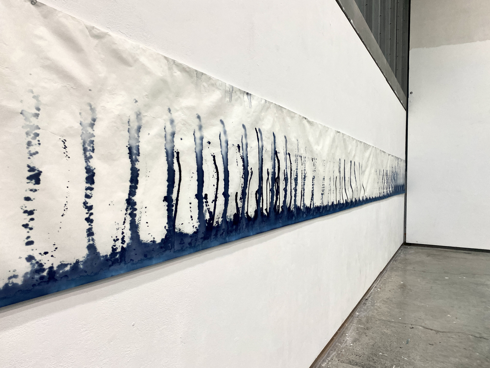
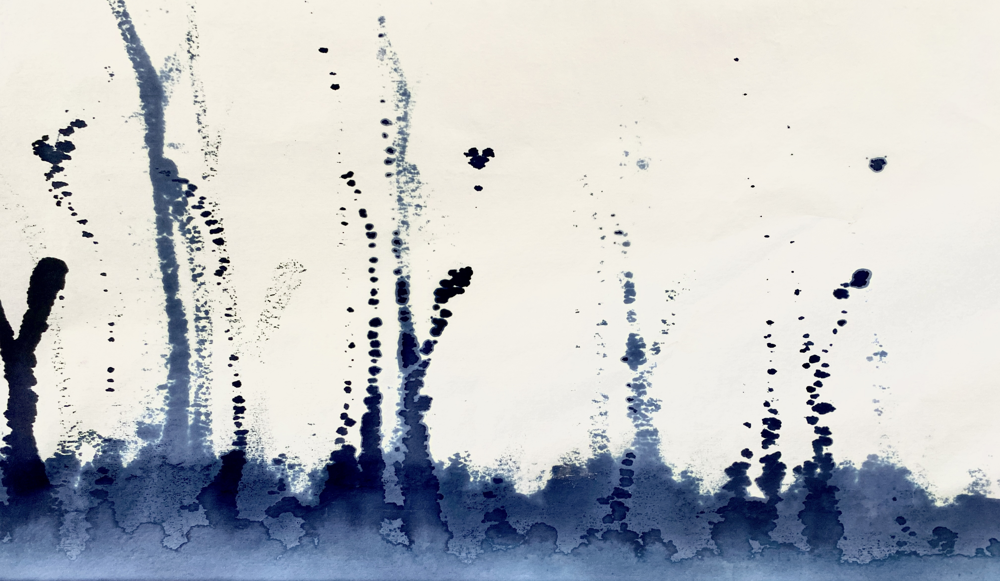
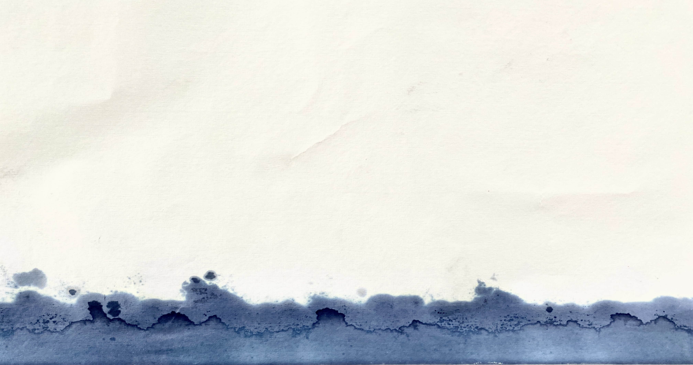
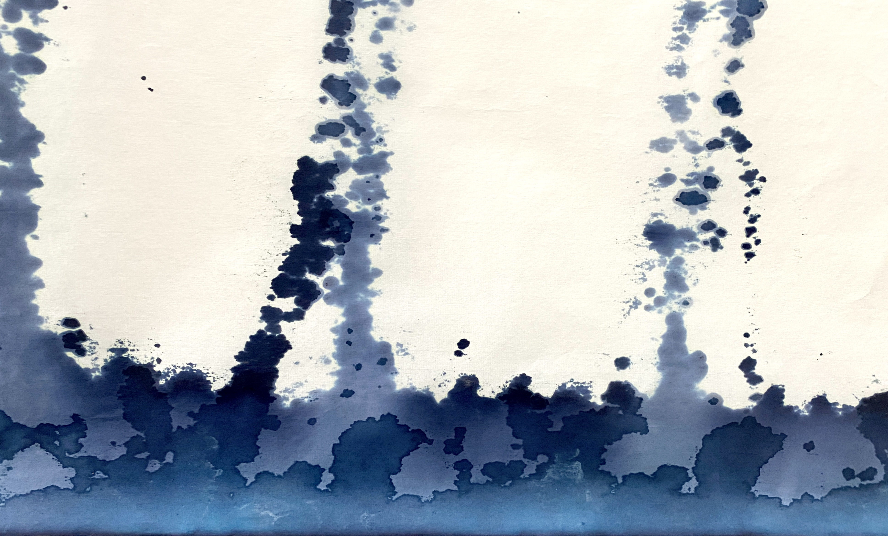

La dissolution de l’histoire II
Cette longue feuille se présente comme un
« panorama abstrait » réalisé sur papier de riz
selon le procédé du cyanotype. J’ai plongé une
extrémité du rouleau de papier dans une solution
photosensible préalablement préparée. Le caractère
incontrôlé et aléatoire du processus, associé à
l’action du soleil, de l’eau, de l’air et d’autres
éléments naturels, fait progressivement apparaître
un paysage imaginaire.
L’œuvre est suspendue à l’aide d’un fil métallique
très fin. Le papier se met ainsi légèrement en
mouvement lorsque le spectateur marche devant
l’installation.